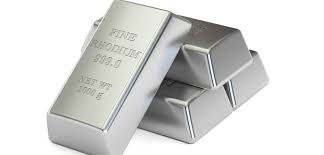

Numero atomico: 45
Massa atomica: 102,9
Temperatura di fusione (°C): 1966
Temperatura di ebollizione (°C): 3695
Energia di prima ionizzazione (kj/mol): 720
Elettronegatività (secondo Pauling): 2,28
Densità: 12,4
Numeri di ossidazione: +3
Configurazione elettronica: 1s2, 2s2, 2p6, 3s2, 3p6, 3d10, 4s2, 4p6, 4d8, 5s1
Maggiori Informazioni